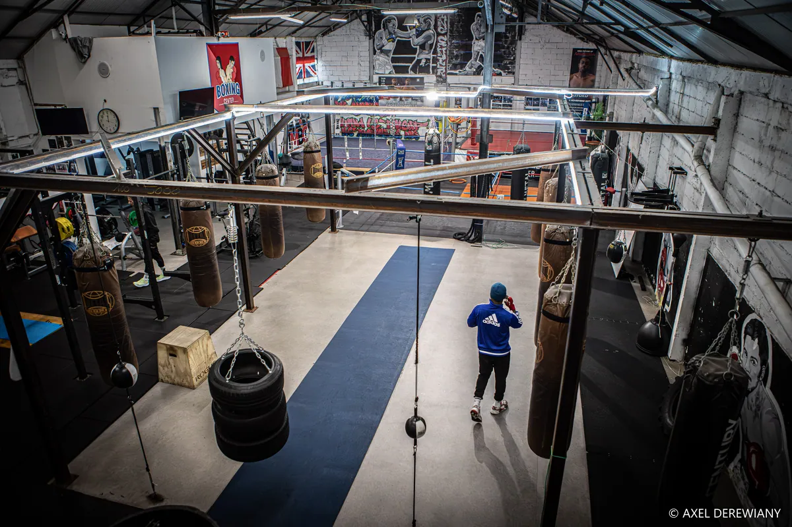

2016
Ouverture de la salle au 12 rue de Fenouillet. Concept des salles américaines : accès six jours sur sept, plusieurs rings, boxe anglaise d’abord.

L’association
TMBC — Toulouse Minimes Boxing Club — est l’association de la salle historique de boxe anglaise des Minimes. Première salle du réseau Boxing Center, ouverte en 2016 au 12 rue de Fenouillet : des rings, pas des miroirs.
Chronologie
2016
Ouverture de la salle au 12 rue de Fenouillet. Concept des salles américaines : accès six jours sur sept, plusieurs rings, boxe anglaise d’abord.
2017
L’association TMBC prend son nom. Le club s’ancre dans le quartier des Minimes — Barrière de Paris.
2018
La boxe éducative et le Boxing Lady décollent. Johnson Suffo et Salomon Kitoko passent professionnels.
Aujourd’hui
Trois boxeurs professionnels et une trentaine d’amateurs formés sur ces rings. Affiliations FFBoxe, FFKMDA, FMMAF.
Le plateau
Travail en petits groupes, sans attendre son tour.
Et une zone pattes d’ours dans le cours d’anglaise.
Rack, barres, cardio. Surplombe les rings. Accès libre aux heures d’ouverture.
Séparés. On peut venir voir un cours sans rien demander.
Gants, casques et protections le temps de l’essai et de s’équiper.
Rings et sacs en autonomie, sans réservation, du lundi au samedi.
 Le ring
Le ring
Une vraie salle de boxe
500 m². Plusieurs rings de compétition, douze sacs, un étage entier pour la préparation physique. Vous vous entraînez dans les conditions qui ont formé plus de 8 boxeurs professionnels.
Le Toulouse Minimes Boxing Club (TMBC) est une association sportive affiliée FFBoxe, FFKMDA et FMMAF. La salle, au 12 rue de Fenouillet (31200 Toulouse), a ouvert en 2016. C’est le berceau du réseau Boxing Center : plusieurs rings, 12 sacs lourds, zone pattes d’ours, plateau de préparation physique à l’étage, vestiaires hommes et femmes.
L’encadrement est diplômé d’État. Personne n’est laissé frapper dans le vide : dès la première séance, un coach place les pieds, les poings et la garde.